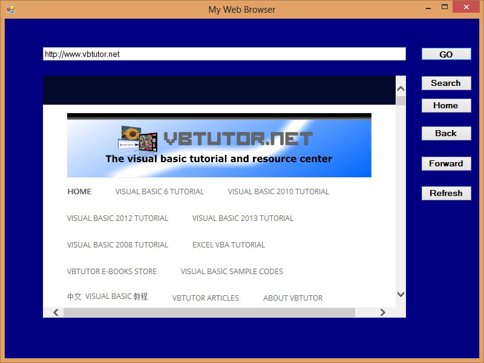

Visual Studio 2013 Lesson 23: Creating a Web Browser
[Lesson 22] << [Contents] >> [Lesson 24]
Which browser do you use to surf the Internet? Basically everyone likes to navigate the Internet using Google Chrome, Internet Explorer ,FireFox, Safari, Opera and more. However, isn’t it cool if you can create your very own web browser that you can customize to your own taste ? Yes, you can do that in Visual Studio 2013 , and pretty easy too. In this lesson, we shall learn how to create a simple web browser and get it running in a few minutes.
The WebBrowser control comprises various methods like GoHome, GoBack, GoForward, Search, Refresh, Navigate and more. They can be used to write event-driven procedures for the various navigation buttons we place on the web browser. For the Navigate method, we need to use the following syntax:
WebBrowser.Navigate(URL)
The Code
Private Sub BtnGO_Click(sender As Object, e As
EventArgs) Handles BtnGO.Click
MyWebBrowser.Navigate(TxtURL.Text)
End Sub
Private Sub BtnSearch_Click(sender As Object, e As
EventArgs) Handles BtnSearch.Click
MyWebBrowser.GoSearch()
End Sub
Private Sub BtnHome_Click(sender As Object, e As
EventArgs) Handles BtnHome.Click
MyWebBrowser.GoHome()
End Sub
Private Sub BtnBack_Click(sender As Object, e As
EventArgs) Handles BtnBack.Click
MyWebBrowser.GoBack()
End Sub
Private Sub BtnForward_Click(sender As Object, e As
EventArgs) Handles Button1.Click
MyWebBrowser.GoForward()
End Sub
Private Sub BtnRefresh_Click(sender As Object, e As
EventArgs) Handles BtnRefresh.Click
MyWebBrowser.Refresh()
End Sub
The Browser Interface
Figure 23.1
{kind=link}